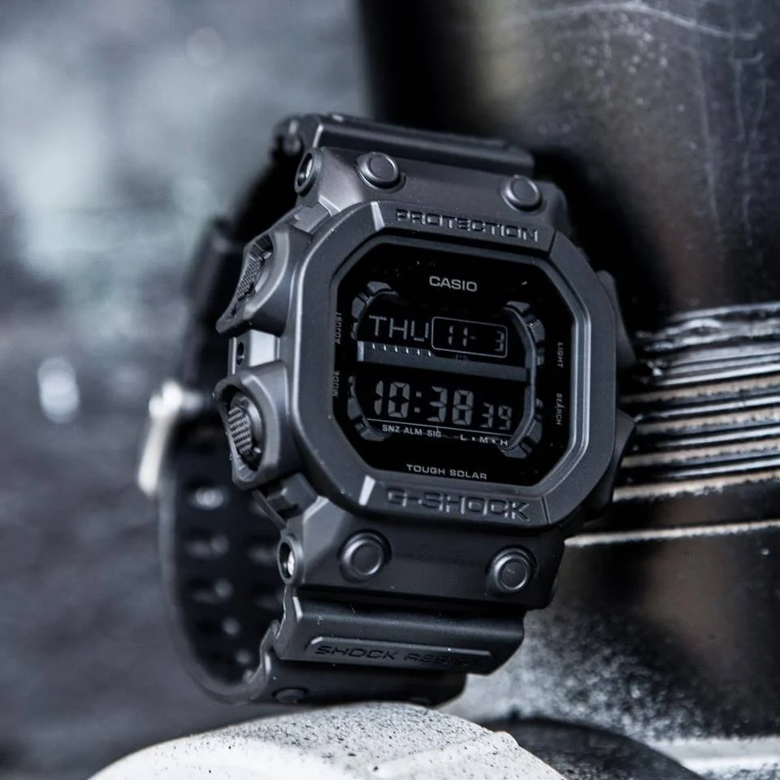
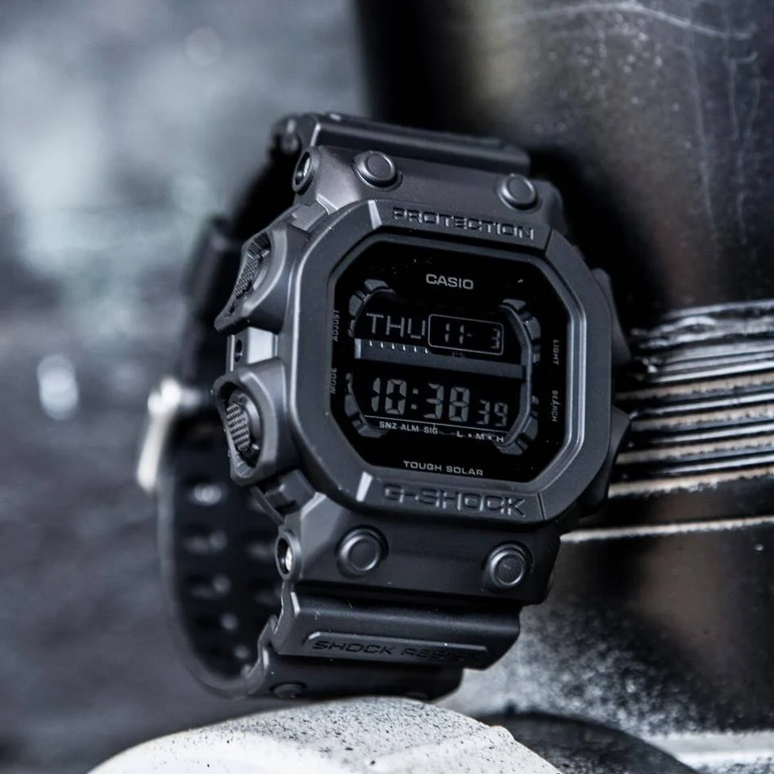

A watch is a portable timepiece intended to be carried or worn by a person. It is designed to keep a consistent movement despite the motions caused by the person's activities. A wristwatch is designed to be worn around the wrist, attached by a watch strap or other type of bracelet, including metal bands, leather straps, or any other kind of bracelet. A pocket watch is designed for a person to carry in a pocket, often attached to a chain.
Watches were developed in the 17th century from spring-powered clocks, which appeared as early as the 14th century. During most of its history the watch was a mechanical device, driven by clockwork, powered by winding a mainspring, and keeping time with an oscillating balance wheel. These are called mechanical watches.[1][2] In the 1960s the electronic quartz watch was invented, which was powered by a battery and kept time with a vibrating quartz crystal. By the 1980s the quartz watch had taken over most of the market from the mechanical watch. Historically, this is called the quartz revolution (also known as quartz crisis in Switzerland).[3][4] Developments in the 2010s include smart watches, which are elaborate computer-like electronic devices designed to be worn on a wrist. They generally incorporate timekeeping functions, but these are only a small subset of the smartwatch's facilities.
 
